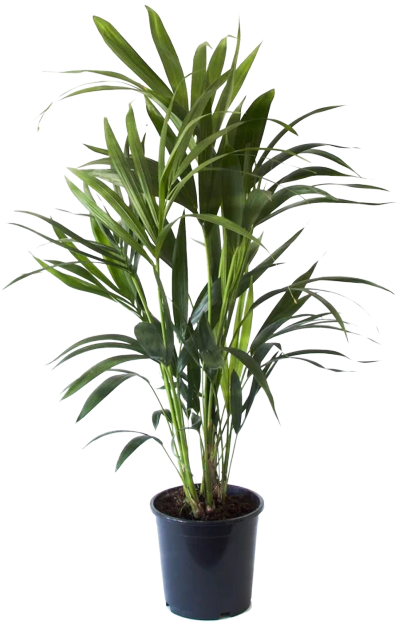

Palmier Kentia Howea
Description
Le palmier Kentia, originaire de l'île Lord Howe en Australie, est reconnu pour son apparence élégante, ses vertus dépolluantes et purificatrices d'air. La taille de la plante est mesurée depuis la base du pot.
Caracteristiques
Réf.: M21002666
Dimensions (cm): H90 x L90 x PR90
Diamètre du produit : 19 cm
Couleur principale : Vert
Matière principale : Bois
Matière de la structure : Plante d'intérieur naturelle
Infos complementaires
Descriptif matière : Plante verte organique
Couleur marketing : Sans pot